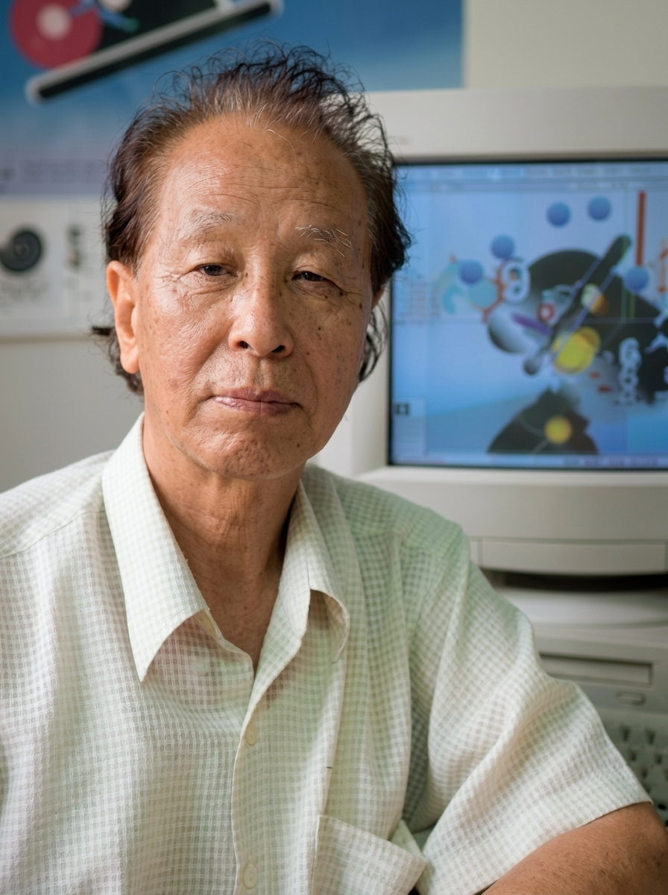

‘한국의 산업디자이너 100인’ 중
최다득표로 선정된 김교만 교수
김교만
"이 도구를 잘 이용해서 디자이너의 창작력과 미적 감각을 펼쳐나가야지 컴퓨터의 기법만을 따라다니다가 컴퓨터가 없이는 아무것도 하지 못하는 노예가 되어서는 안 되죠."
산업디자인포장개발원(원장 유호민)은 지난 8월 우리나라를 대표하는 ‘한국의 산업디자이너 100인’을 선정·발표했다. 최다득표자는 서울대 산업디자인과 교수를 역임한 김교만 교수.
’94년부터 서울대 명예교수로 있는 김 교수는 유난히 더웠던 여름동안 매킨토시 앞에 앉아 컴퓨터 삼매경에 빠졌었다고 한다. 젊은 디자이너가 앉아 있는 모습만 눈에 익었던 터라 칠순을 바라보는 노(老) 교수가 컴퓨터 앞에 앉아 눈도 떼지 않고 마우스를 클릭하고 있는 모습은 오히려 신선했다.

1 매킨토시와 노(老) 교수의 새로운 도전
개인전을 준비중이라는 김 교수는 “이제 컴퓨터 덕분에 내 캐릭터의 앞얼굴과 자유로운 동작까지 묘사할 수 있게 되었어요”라고 말문을 연다. “전시장에는 캐릭터의 다양한 모습을 네 벽면에 둘러치고, 가운데 공간은 배너를 늘어뜨려 평면을 떠나 공간 속에서 그래픽 디자인을 보여줄 계획”이라며 자신의 이미지를 어떻게 새로운 매체로 시각화해서 보여줄지에 대해 고민중이다.
지난해 ‘MM Director’s’ 교육을 40일 동안 꼬박 받았다는 김 교수는 이렇게 열정적으로 컴퓨터를 공부하는 것에 대해 “물론 컴퓨터 다루는 능력을 향상시키기 위해서였지만, 덧붙여 우리 컴맹세대의 디자이너도 컴퓨터와 가까워졌으면 하는 바램에서”라고 밝힌다.
2 컴퓨터의 등장, 그리고 디자이너의 '자기체질'
사실 김 교수가 컴퓨터를 사놓고 망설이기를 2년. 그의 표현에 의하면 ‘한 세대를 사는 디자이너로서 이제 컴퓨터를 다루지 못한다면 주저앉는 느낌일 것 같아’ 컴퓨터 공부를 시작했다. 그리고 이제는 한번 자리를 하면 3시간이고 4시간이고 컴퓨터 앞에 앉아 작업에 몰두한다. 그러나 그는 컴퓨터의 위험성도 간과하지 않고 짚어낸다.
“컴퓨터의 등장으로 디자인계는 컴퓨터를 다를 줄 아는 젊은 세대와 거의 모르는 기성세대간에 벽이 형성되어 있습니다. 컴퓨터는 여러가지 다양한 기술을 제공하면서 시간을 엄청나게 단축시켜주죠. 그러나 이것은 단순한 디자인 도구에 불과합니다. 이 도구를 잘 이용해서 디자이너의 창작력과 미적 감각을 펼쳐나가야지 컴퓨터의 기법만을 따라다니다가 컴퓨터가 없이는 아무것도 하지 못하는 노예가 되어서는 안 되죠. 소위 ‘자기체질’을 찾아야 하는데, 바로 이것을 제대로 찾는 방법을 알려주는 것이 교수의 역할 아닐까요?”
3 70%라는 압도적인 지지와 미래지향적 사고
이번 100인 선정을 위해 개발원에서는 산업디자인전 대통령상 수상자, 공인산업디자인전문회사, 대학 교수 및 기업 대표와 산업디자인 관련자 30명으로 선정위원회를 결성, 399명의 대상자를 선정했다. 그후 디자인 관련 협회장 및 산업디자인전 심사위원, GD·SD 수상업체 디자이너 등 총 590명에게 설문지를 발송, 370장을 회수했다. 이중 김교만 교수는 70%라는 압도적인 득표 기록을 세운 것이다.
이번 선정방법에 대한 타당성은 논외로 치더라도, 흔히 정년을 지나면 사람들의 기억 속에서 사라지는 요즘, 우리가 정년퇴직 3년째를 맞이하는 김 교수를 여전히 기억하며(?) 우리나라의 대표적인 디자이너로 꼽는 이유는 그의 미래지향적인 사고와 이를 손수 실천하는 행동력에서 기인한 것이 아닐까?
글: 왕미 기자
사진: 박은민 기자
출처: 월간디자인 1996년 9월호